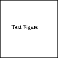

Manuscript Title 1
(Dated: June 25, 2024)
An article usually includes an abstract, a concise summary of the work covered at length in the main body of the article.
- Usage
Secondary publications and information retrieval purposes.
- Structure
You may use the description environment to structure your abstract; use the optional argument of the
\itemcommand to give the category of each item.
I. First-level heading
This sample document demonstrates proper use of REVTeX 4.2 (and LaTeX2ε) in mansucripts prepared for submission to APS journals. Further information can be found in the REVTeX 4.2 documentation included in the distribution or available at http://journals.aps.org/revtex/.
When commands are referred to in this example file, they are always shown with their required arguments, using normal TeX format. In this format, #1, #2, etc. stand for required author-supplied arguments to commands. For example, in \section{#1} the #1 stands for the title text of the author’s section heading, and in \title{#1} the #1 stands for the title text of the paper.
Line breaks in section headings at all levels can be introduced using \\. A blank input line tells TeX that the paragraph has ended. Note that top-level section headings are automatically uppercased. If a specific letter or word should appear in lowercase instead, you must escape it using \lowercase{#1}.
A. Second-level heading: Formatting
This file may be formatted in either the preprint or reprint style. reprint format mimics final journal output. Either format may be used for submission purposes. letter sized paper should be used when submitting to APS journals.
1. Wide text (A level-3 head)
The widetext environment will make the text the width of the full page, as on page *. (Note the use the \pageref{#1} command to refer to the page number.)
a. Note (Fourth-level head is run in)
The width-changing commands only take effect in two-column formatting. There is no effect if text is in a single column.
B. Citations and References
A citation in text uses the command \cite{#1} or \onlinecite{#1} and refers to an entry in the bibliography. An entry in the bibliography is a reference to another document.
1. Citations
Because REVTeX uses the natbib package of Patrick Daly, the entire repertoire of commands in that package are available for your document; see the natbib documentation for further details. Please note that REVTeX requires version 8.31a or later of natbib.
a. Syntax
The argument of \cite may be a single key, or may consist of a comma-separated list of keys. The citation key may contain letters, numbers, the dash (-) character, or the period (.) character. New with natbib 8.3 is an extension to the syntax that allows for a star (*) form and two optional arguments on the citation key itself. The syntax of the \cite command is thus (informally stated)
\cite{key}, or\cite{optarg+key}, or\cite{optarg+key,optarg+key…},
where optarg+key signifies
key, or
*key, or
[pre]key, or
[pre][post]key, or even
*[pre][post]key.
where pre and post is whatever text you wish to place at the beginning and end, respectively, of the bibliographic reference (see Ref. [
1
] and the two under Ref. [
2
]). (Keep in mind that no automatic space or punctuation is applied.) It is highly recommended that you put the entire pre or post portion within its own set of braces, for example: \cite { [ {text}]key}. The extra set of braces will keep LaTeX out of trouble if your text contains the comma (,) character.
The star (*) modifier to the key signifies that the reference is to be merged with the previous reference into a single bibliographic entry, a common idiom in APS and AIP articles (see below, Ref. [ 2 ]). When references are merged in this way, they are separated by a semicolon instead of the period (full stop) that would otherwise appear.
b. Eliding repeated information
When a reference is merged, some of its fields may be elided: for example, when the author matches that of the previous reference, it is omitted. If both author and journal match, both are omitted. If the journal matches, but the author does not, the journal is replaced by ibid., as exemplified by Ref. [ 2 ]. These rules embody common editorial practice in APS and AIP journals and will only be in effect if the markup features of the APS and AIP BibTeX styles is employed.
c. The options of the cite command itself
Please note that optional arguments to the key change the reference in the bibliography, not the citation in the body of the document. For the latter, use the optional arguments of the \cite command itself: \cite *[pre-cite][post-cite]{key-list}.
2. Example citations
By default, citations are numerical
(
3
)
. Author-year citations are used when the journal is RMP. To give a textual citation, use \onlinecite{#1}: Refs.
4
. By default, the natbib package automatically sorts your citations into numerical order and “compresses” runs of three or more consecutive numerical citations. REVTeX provides the ability to automatically change the punctuation when switching between journal styles that provide citations in square brackets and those that use a superscript style instead. This is done through the citeautoscript option. For instance, the journal style prb automatically invokes this option because Physical Review B uses superscript-style citations. The effect is to move the punctuation, which normally comes after a citation in square brackets, to its proper position before the superscript. To illustrate, we cite several together
(
1
;
4
-
6
)
, and once again in different order (Refs.
(
1
;
2
;
2
;
4
-
6
)
). Note that the citations were both compressed and sorted. Futhermore, running this sample file under the prb option will move the punctuation to the correct place.
When the prb class option is used, the \cite{#1} command displays the reference’s number as a superscript rather than in square brackets. Note that the location of the \cite{#1} command should be adjusted for the reference style: the superscript references in prb style must appear after punctuation; otherwise the reference must appear before any punctuation. This sample was written for the regular (non-prb) citation style. The command \onlinecite{#1} in the prb style also displays the reference on the baseline.
3. References
A reference in the bibliography is specified by a \bibitem{#1} command with the same argument as the \cite{#1} command. \bibitem{#1} commands may be crafted by hand or, preferably, generated by BibTeX. REVTeX 4.2 includes BibTeX style files apsrev4-2.bst, apsrmp4-2.bst appropriate for Physical Review and Reviews of Modern Physics, respectively.
4. Example references
This sample file employs the \bibliography command, which formats the .bbl file and specifies which bibliographic databases are to be used by BibTeX (one of these should be by arXiv convention .bib). Running BibTeX (via bibtex ) after the first pass of LaTeX produces the file .bbl which contains the automatically formatted \bibitem commands (including extra markup information via \bibinfo and \bibfield commands). If not using BibTeX, you will have to create the thebibiliography environment and its \bibitem commands by hand.
Numerous examples of the use of the APS bibliographic entry types appear in the bibliography of this sample document. You can refer to the .bib file, and compare its information to the formatted bibliography itself.
C. Footnotes
Footnotes, produced using the \footnote{#1} command, usually integrated into the bibliography alongside the other entries. Numerical citation styles do this
5
; author-year citation styles place the footnote at the bottom of the text column. Note: due to the method used to place footnotes in the bibliography, you must re-run BibTeX every time you change any of your document’s footnotes.
II. Math and Equations
Inline math may be typeset using the $ delimiters. Bold math symbols may be achieved using the bm package and the \bm{#1} command it supplies. For instance, a bold can be typeset as $\bm{\alpha}$ giving . Fraktur and Blackboard (or open face or double struck) characters should be typeset using the \mathfrak{#1} and \mathbb{#1} commands respectively. Both are supplied by the amssymb package. For example, $\mathbb{R}$ gives and $\mathfrak{G}$ gives
In LaTeX there are many different ways to display equations, and a few preferred ways are noted below. Displayed math will center by default. Use the class option fleqn to flush equations left.
Below we have numbered single-line equations; this is the most common type of equation in Physical Review:
Note the open one in Eq. (2).
Not all numbered equations will fit within a narrow column this way. The equation number will move down automatically if it cannot fit on the same line with a one-line equation:
When the \label{#1} command is used [cf. input for Eq. (2)], the equation can be referred to in text without knowing the equation number that TeX will assign to it. Just use \ref{#1}, where #1 is the same name that used in the \label{#1} command.
Unnumbered single-line equations can be typeset using the \[, \] format:
A. Multiline equations
Multiline equations are obtained by using the eqnarray environment. Use the \nonumber command at the end of each line to avoid assigning a number:
Note: Do not use \label{#1} on a line of a multiline equation if \nonumber is also used on that line. Incorrect cross-referencing will result. Notice the use \text{#1} for using a Roman font within a math environment.
To set a multiline equation without any equation numbers, use the \begin{eqnarray*}, \end{eqnarray*} format:
a. A few notes on tags
\tag{#1} requires the amsmath package. Place the \tag{#1} command before the \label{#1}, if any. The numbering produced by \tag{#1} does not affect the automatic numbering in REVTeX; therefore, the number must be known ahead of time, and it must be manually adjusted if other equations are added. \tag{#1} works with both single-line and multiline equations. \tag{#1} should only be used in exceptional cases—do not use it to number many equations in your paper. Please note that this feature of the amsmath package is not compatible with the hyperref (6.77u) package.
1. Wide equations
The equation that follows is set in a wide format, i.e., it spans the full page. The wide format is reserved for long equations that cannot easily be set in a single column:
This is typed to show how the output appears in wide format. (Incidentally, since there is no blank line between the equation environment above and the start of this paragraph, this paragraph is not indented.)
III. Cross-referencing
REVTeX will automatically number such things as sections, footnotes, equations, figure captions, and table captions. In order to reference them in text, use the \label{#1} and \ref{#1} commands. To reference a particular page, use the \pageref{#1} command.
The \label{#1} should appear within the section heading, within the footnote text, within the equation, or within the table or figure caption. The \ref{#1} command is used in text at the point where the reference is to be displayed. Some examples: Section I. on page *, Table 1,
Left 6 |
Centered 7 |
Decimal |
Right |
1 |
2 |
3.001 |
4 |
10 |
20 |
30 |
40 |
100 |
200 |
300.0 |
400 |
and Fig. 1.

IV. Floats: Figures, Tables, Videos, etc.
Figures and tables are usually allowed to “float”, which means that their placement is determined by LaTeX, while the document is being typeset.
Use the figure environment for a figure, the table environment for a table. In each case, use the \caption command within to give the text of the figure or table caption along with the \label command to provide a key for referring to this figure or table. The typical content of a figure is an image of some kind; that of a table is an alignment.
|
|
|||
Ion |
1st alternative |
2nd alternative |
lst alternative |
2nd alternative |
K |
|
|
|
|
Mn |
|
|
|
|
Cl |
|
|
||
He |
|
|
|
|
Ag |
|
|
||
Insert an image using either the graphics or graphix packages, which define the \includegraphics{#1} command. (The two packages differ in respect of the optional arguments used to specify the orientation, scaling, and translation of the image.) To create an alignment, use the tabular environment.
The best place to locate the figure or table environment is immediately following its first reference in text; this sample document illustrates this practice for Fig. 1, which shows a figure that is small enough to fit in a single column.
In exceptional cases, you will need to move the float earlier in the document, as was done with Table 2: LaTeX’s float placement algorithms need to know about a full-page-width float earlier.
Fig. 2 has content that is too wide for a single column, so the figure* environment has been used.
One |
Two |
Three |
Four |
Five |
one |
two |
three
|
four
|
five
|
He |
2 |
2.77234 |
45672. |
0.69 |
C 9 |
C 10 |
12537.64 |
37.66345 |
86.37 |
The content of a table is typically a tabular environment, giving rows of type in aligned columns. Column entries separated by &’s, and each row ends with \\. The required argument for the tabular environment specifies how data are aligned in the columns. For instance, entries may be centered, left-justified, right-justified, aligned on a decimal point. Extra column-spacing may be be specified as well, although REVTeX 4 sets this spacing so that the columns fill the width of the table. Horizontal rules are typeset using the \hline command. The doubled (or Scotch) rules that appear at the top and bottom of a table can be achieved enclosing the tabular environment within a ruledtabular environment. Rows whose columns span multiple columns can be typeset using the \multicolumn{#1}{#2}{#3} command (for example, see the first row of Table 2).
() |
() |
|
() |
() |
|
||
Cu |
0.800 |
14.10 |
2.550 |
Sn 12 |
0.680 |
1.870 |
3.700 |
Ag |
0.990 |
15.90 |
2.710 |
Pb 13 |
0.450 |
1.930 |
3.760 |
Au |
1.150 |
15.90 |
2.710 |
Ca 14 |
0.750 |
2.170 |
3.560 |
Mg |
0.490 |
17.60 |
3.200 |
Sr 15 |
0.900 |
2.370 |
3.720 |
Zn |
0.300 |
15.20 |
2.970 |
Li 2 |
0.380 |
1.730 |
2.830 |
Cd |
0.530 |
17.10 |
3.160 |
Na 5 |
0.760 |
2.110 |
3.120 |
Hg |
0.550 |
17.80 |
3.220 |
K 5 |
1.120 |
2.620 |
3.480 |
Al |
0.230 |
15.80 |
3.240 |
Rb 3 |
1.330 |
2.800 |
3.590 |
Ga |
0.310 |
16.70 |
3.330 |
Cs 4 |
1.420 |
3.030 |
3.740 |
In |
0.460 |
18.40 |
3.500 |
Ba 5 |
0.960 |
2.460 |
3.780 |
Tl |
0.480 |
18.90 |
3.550 |
show various effects. A table that fits in a single column employs the table environment. Table 2 is a wide table, set with the table* environment. Long tables may need to break across pages. The most straightforward way to accomplish this is to specify the [H] float placement on the table or table* environment. However, the LaTeX2ε package longtable allows headers and footers to be specified for each page of the table. A simple example of the use of longtable can be found in the file summary.tex that is included with the REVTeX 4 distribution.
There are two methods for setting footnotes within a table (these footnotes will be displayed directly below the table rather than at the bottom of the page or in the bibliography). The easiest and preferred method is just to use the \footnote{#1} command. This will automatically enumerate the footnotes with lowercase roman letters. However, it is sometimes necessary to have multiple entries in the table share the same footnote. In this case, there is no choice but to manually create the footnotes using \footnotemark[#1] and \footnotetext[#1]{#2}. #1 is a numeric value. Each time the same value for #1 is used, the same mark is produced in the table. The \footnotetext[#1]{#2} commands are placed after the tabular environment. Examine the LaTeX source and output for Tables 1 and 4 for examples.
Physical Review style requires that the initial citation of figures or tables be in numerical order in text, so don’t cite Fig. 2 until Fig. 1 has been cited.
Acknowledgments
We wish to acknowledge the support of the author community in using REVTeX, offering suggestions and encouragement, testing new versions, ….Appendix A: Appendixes
To start the appendixes, use the \appendix command. This signals that all following section commands refer to appendixes instead of regular sections. Therefore, the \appendix command should be used only once—to setup the section commands to act as appendixes. Thereafter normal section commands are used. The heading for a section can be left empty. For example,
\appendix
\section{}
will produce an appendix heading that says “APPENDIX A” and
\appendix
\section{Background}
will produce an appendix heading that says “APPENDIX A: BACKGROUND” (note that the colon is set automatically).
If there is only one appendix, then the letter “A” should not appear. This is suppressed by using the star version of the appendix command (\appendix* in the place of \appendix).
Appendix B: A little more on appendixes
Observe that this appendix was started by using
\section{A little more on appendixes}
Note the equation number in an appendix:
B1 A subsection in an appendix
You can use a subsection or subsubsection in an appendix. Note the numbering: we are now in Appendix B1.
Note the equation numbers in this appendix:
References
- [1]
E. Witten, (2001), hep-th/0106109 .
- [2]
R. P. Feynman, Phys. Rev. 94, 262 (1954).
- [2]
A. Einstein, Yu. Podolsky, and N. Rosen (EPR), Phys. Rev. 47, 777 (1935).
- [3]
E. Beutler, in Williams Hematology, Vol. 2, edited by E. Beutler, M. A. Lichtman, B. W. Coller, and T. S. Kipps (McGraw-Hill, New York, 1994) Chap. 7, pp. 654–662, 5th ed.
- [4]
N. D. Birell and P. C. W. Davies, Quantum Fields in Curved Space (Cambridge University Press, 1982).
- [5]
J. G. P. Berman and J. F. M. Izrailev, Stability of nonlinear modes, Physica D 88, 445 (1983).
- [6]
E. B. Davies and L. Parns, Trapped modes in acoustic waveguides, Q. J. Mech. Appl. Math. 51, 477 (1988).
- [7]
Automatically placing footnotes into the bibliography requires using BibTeX to compile the bibliography.
- [8]
E. Beutler, in Williams Hematology, Vol. 2, edited by E. Beutler, M. A. Lichtman, B. W. Coller, and T. S. Kipps (McGraw-Hill, New York, 1994) 5th ed., Chap. 7, pp. 654–662.
- [9]
D. E. Knuth, in Fundamental Algorithms, The Art of Computer Programming, Vol. 1 (Addison-Wesley, Reading, Massachusetts, 1973) Section 1.2, pp. 10–119, 2nd ed., a full INBOOK entry.
- [10]
J. S. Smith and G. W. Johnson, Philos. Trans. R. Soc. London, Ser. B 777, 1395 (2005).
- [11]
W. J. Smith, T. J. Johnson, and B. G. Miller, Surface chemistry and preferential crystal orientation on a silicon surface (2010a), J. Appl. Phys. (unpublished).
- [12]
V. K. Smith, K. Johnson, and M. O. Klein, Surface chemistry and preferential crystal orientation on a silicon surface (2010b), J. Appl. Phys. (submitted).
- [13]
U. Ünderwood, N. Ñet, and P. Pot, Lower bounds for wishful research results (1988), talk at Fanstord University (A full UNPUBLISHED entry).
- [14]
M. P. Johnson, K. L. Miller, and K. Smith, personal communication (2007).
- [15]
J. Smith, ed., AIP Conf. Proc., Vol. 841 (2007).
- [16]
W. V. Oz and M. Yannakakis, eds., Proc. Fifteenth Annual, All ACM Conferences No. 17, ACM (Academic Press, Boston, 1983) a full PROCEEDINGS entry.
- [17]
Y. Burstyn, Proceedings of the 5th International Molecular Beam Epitaxy Conference, Santa Fe, NM (2004), (unpublished).
- [18]
B. Quinn, ed., Proceedings of the 2003 Particle Accelerator Conference, Portland, OR, 12-16 May 2005 (Wiley, New York, 2001) albeit the conference was held in 2005, it was the 2003 conference, and the proceedings were published in 2001; go figure.
- [19]
A. G. Agarwal, Proceedings of the Fifth Low Temperature Conference, Madison, WI, 1999, Semiconductors 66, 1238 (2001).
- [20]
R. Smith, Hummingbirds are our friends, J. Appl. Phys. (these proceedings) (2001), abstract No. DA-01.
- [21]
J. Smith, Proc. SPIE 124, 367 (2007b), required title is missing.
- [22]
T. Térrific, An Sorting Algorithm, Wishful Research Result 7 (Fanstord University, Computer Science Department, Fanstord, California, 1988) a full TECHREPORT entry.
- [23]
J. Nelson, TWI Report 666/1999 (Jan. 1999) required institution missing.
- [24]
W. K. Fields, ECE Report No. AL944 (2005) required institution missing.
- [25]
Y. M. Zalkins, e-print arXiv:cond-mat/040426 (2008).
- [26]
J. Nelson, U.S. Patent No. 5,693,000 (12 Dec. 2005).
- [27]
J. K. Nelson, M.S. thesis, New York University (1999b).
- [28]
É. Masterly, Mastering Thesis Writing, Master’s project, Stanford University, English Department (1988), a full MASTERSTHESIS entry.
- [29]
S. M. Smith, Ph.D. thesis, Massachusetts Institute of Technology (2003).
- [30]
S. R. Kawa and S.-J. Lin, J. Geophys. Res. 108, 4201 (2003), DOI:10.1029/2002JD002268.
- [31]
F. P. Phony-Baloney, Fighting Fire with Fire: Festooning French Phrases, PhD dissertation, Fanstord University, Department of French (1988), a full PHDTHESIS entry.
- [32]
D. E. Knuth, Seminumerical Algorithms, 2nd ed., The Art of Computer Programming, Vol. 2 (Addison-Wesley, Reading, Massachusetts, 1981) a full BOOK entry.
- [33]
J. C. Knvth, The programming of computer art, Vernier Art Center, Stanford, California (1988), a full BOOKLET entry.
- [34]
R. Ballagh and C. Savage, Bose-einstein condensation: from atomic physics to quantum fluids, proceedings of the 13th physics summer school (World Scientific, Singapore, 2000) cond-mat/0008070 .
- [35]
R. Ballagh and C. Savage, Bose-einstein condensation: from atomic physics to quantum fluids, in Proceedings of the 13th Physics Summer School, edited by C. Savage and M. Das (World Scientific, Singapore, 2000) cond-mat/0008070 .
- [36]
W. Opechowski and R. Guccione, Introduction to the theory of normal metals, in Magnetism, Vol. IIa, edited by G. T. Rado and H. Suhl (Academic Press, New York, 1965) p. 105.
- [37]
W. Opechowski and R. Guccione, Introduction to the theory of normal metals, in Magnetism, Vol. IIa, edited by G. T. Rado and H. Suhl (Academic Press, New York, 1965) p. 105.
- [38]
W. Opechowski and R. Guccione, Introduction to the theory of normal metals, in Magnetism, Vol. IIa, edited by G. T. Rado and H. Suhl (Academic Press, New York, 1965) p. 105.
- [39]
J. M. Smith, Molecular dynamics (Academic, New York, 1980).
- [40]
V. E. Zakharov and A. B. Shabat, Exact theory of two-dimensional self-focusing and one-dimensional self-modulation of waves in nonlinear media, Zh. Eksp. Teor. Fiz. 61, 118 (1971), [Sov. Phys. JETP 34, 62 (1972)].
- [41]
J. M. Smith, in Molecular Dynamics, edited by C. Brown (Academic, New York, 1980).
- [42]
D. D. Lincoll, Semigroups of recurrences, in High Speed Computer and Algorithm Organization, Fast Computers No. 23, edited by D. J. Lipcoll, D. H. Lawrie, and A. H. Sameh (Academic Press, New York, 1977) 3rd ed., Part 3, pp. 179–183, a full INCOLLECTION entry.
- [43]
A. V. Oaho, J. D. Ullman, and M. Yannakakis, On notions of information transfer in VLSI circuits, in Proc. Fifteenth Annual ACM, Boston, 1982, All ACM Conferences No. 17, edited by W. V. Oz and M. Yannakakis, ACM (Academic Press, New York, 1983) pp. 133–139, a full INPROCEDINGS entry.
- [44]
L. Manmaker, The Definitive Computer Manual, Chips-R-Us, Silicon Valley, silver ed. (1986), a full MANUAL entry.
- A footnote to the article title
- Also at Physics Department, XYZ University.
- Second.Author@institution.edu
- http://www.Second.institution.edu/ Charlie.Author
- Automatically placing footnotes into the bibliography requires using BibTeX to compile the bibliography.
- Note a.
- Note b.
- The parameter of these positions is .
- Some tables require footnotes.
- Some tables need more than one footnote.
- Here’s the first, from Ref. 2 .
- Here’s the second.
- Here’s the third.
- Here’s the fourth.
- And etc.